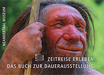

Orthographisch korrekt sind sicherlich die Schreibweisen Neandertal und Neandertaler. Wir erlauben uns mit
unserem Museumsnamen und der Schreibweise Neanderthaler im Museum eine Reminiszenz an die Zeit der Entdeckung des
Skeletts im Jahr 1856. Zu dieser Zeit wurde in Deutschland „Tal“ noch mit „h“ geschrieben wurde, was sich durch
die Rechtschreibreform 1901 änderte. Die lateinische und englische Schreibweise Homo neanderthalensis bzw.
Neanderthal Man geht übrigens auch darauf zurück.
Am Ende der Dauerausstellung befindet sich das Museumscafé mit einer guten Auswahl an Getränken und Speisen.
Im direkten Umfeld des Museums finden Sie zudem gutbürgerliche Restaurants und den Neanderthal Kiosk.
Das Museum ist behindertengerecht ausgestattet. Alle Ausstellungsbereiche sind mit einem Rollstuhl zu erreichen.
Es gibt einen Aufzug im Museum. Zusätzlich besteht die Möglichkeit, einen Rollstuhl auszuleihen. Dieser kann auch
vorab reserviert werden.
Normalerweise können Sie Ihren Hund leider nicht zum Museumsbesuch mitbringen. Einzige Ausnahme ist der „DoggyDay“,
den wir uns für Hunde an der Leine mit guterzogenen Haltern haben einfallen lassen, die gemeinsam die Dauerausstellung
erkunden möchten. Den nächsten DoggyDay finden Sie unter Veranstaltungen. Aber Das Neandertal mit der Fundstelle des
Neanderthalers, dem Wildgehege und dem Kunstweg bietet sich allerdings auch so ideal für einen schönen Spaziergang mit
dem „besten Freund“ an.
Das Neanderthal Museum und auch die Fundstelle sind kinderwagentauglich. Der Rundweg
zum Wildgehege nur zum Teil, da sich auf halber Strecke Treppen befinden.
Das gesamte Museum ist mit einem Kinderwagen begehbar. Gleiches gilt auch für die Außenanlage mit dem Fundort und
dem Wildgehege. Im Museumscafé finden Sie zudem einen Hochsitz für Kleinkinder und im Toilettenbereich gibt es eine
Wickelmöglichkeit.
Foto-, Film-, Video- und sonstige Bildaufnahmen ohne Stativ und Lampen sowie Zeichnungen sind zu ausschließlich
privaten Zwecken erlaubt. Wir bitten Sie, auf andere Besucher beim Fotografieren und Filmen Rücksicht zu nehmen. Die
Überlassung solcher Aufnahmen an Dritte, zu gewerblichen Zwecken oder für Internetdarstellungen sind leider nicht
gestattet. Kommerzielle bzw. gewerbliche Foto- und Filmaufnahmen sind im Vorfeld unter Angabe des Zwecks der Verwendung
schriftlich bei der Museumsleitung anzuzeigen und sind genehmigungspflichtig. Journalistische Fotoaufnahmen sind unter
der Angabe der Verwendung schriftlich beim Museumspersonal anzuzeigen.
Neben dem Besuch im Neanderthal Museum bietet das Neanderland viele weitere Attraktionen und Angeboten zu Wandern, Radfahren,
Museen und Sport & Action.
Mehr zu den Angeboten unter www.neanderland.de
Im Museumsshop erhalten Sie unseren Museumsführer Zeitreise erleben. Das Buch zur Dauerausstellung,
der Ihnen einen ersten Eindruck vom Museum ermöglicht oder eine schöne Erinnerung an Ihren Besuch bietet.

In der Steinzeitwerkstatt des Museums können Kinder und Erwachsene einen spannenden Geburtstag zu unterschiedlichen
Themen verbringen:
Steinzeitgeburtstag für Kinder von 5 bis 8 Jahren
Schätze der Natur
Steinzeitlicht
Wir als Jäger und Sammler
Steinzeittiere
Steinzeitgeburtstag für Kinder ab 8 Jahren
Traumfänger
Graffiti der Steinzeit
Steinzeitjäger
Leckere Brotzeit
Steinzeitschmuck
Funkenschlag und Feuerlampe
Steinzeitgeburtstag für Erwachsene
Alter ist relativ